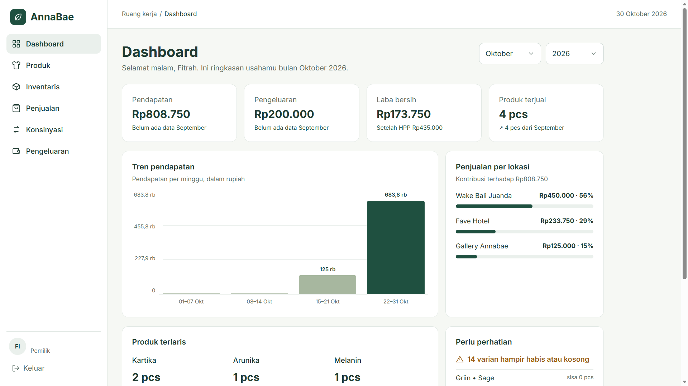
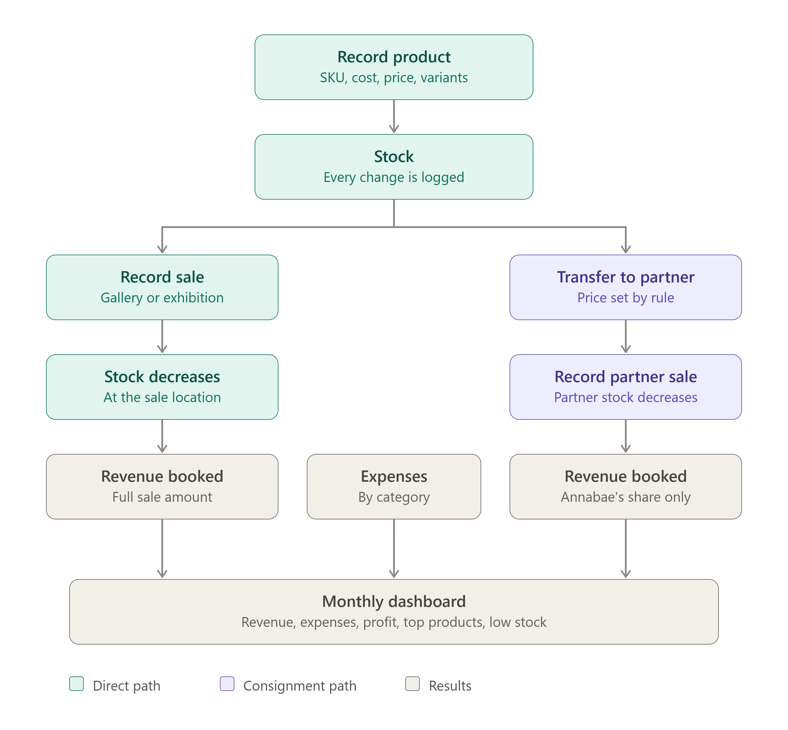
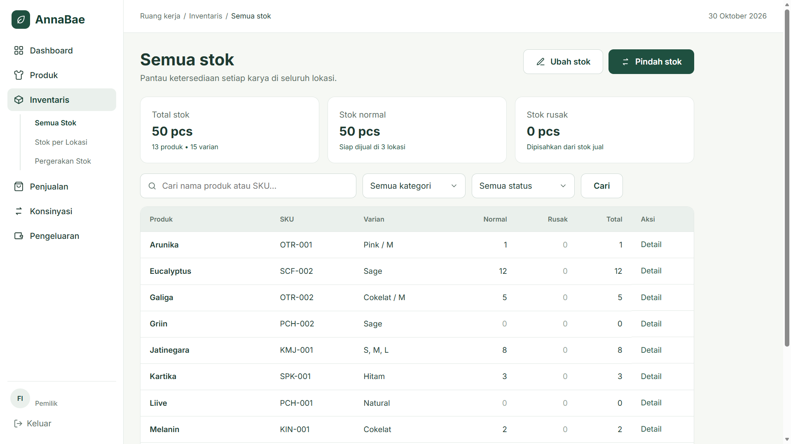
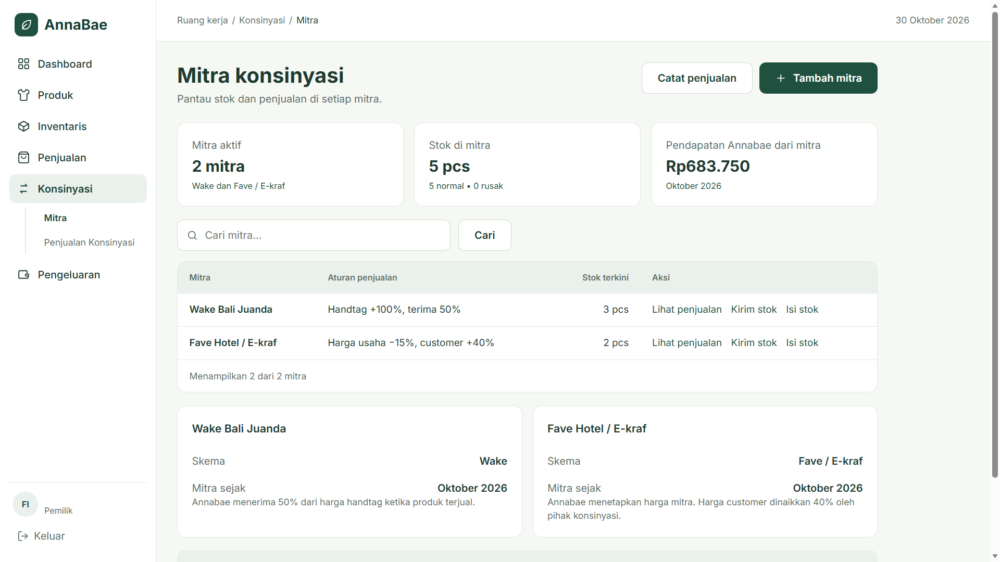

Business Operations System, built through AI-assisted development

Annabae Business Management System is a web-based operations system for an ecoprint fashion business. It brings product and stock records, sales, consignment, and expenses into one place, with a monthly dashboard.
All application code was generated by AI coding tools. The AI also drafted the test cases from my instructions and my test format. My contribution is the analysis of what the business needs, the scope and the rules, directing and reviewing the build in stages, and running the tests by hand and judging the results.
The business sells ecoprint fashion and also places products with consignment partners. Running it means keeping consistent records of products, stock movements, sales, partner consignments, and expenses. The project started from that need: move those records into a structured digital workflow that a non-technical owner can use.
I worked out the requirements from how the business actually operates. The feature scope, the business rules, and the simplicity of the interface were my decisions.
I started from how the business actually runs: what needs recording, which features the system needs, and how each workflow should go. That became the instructions and specs I gave the AI coding tool.
I reviewed the generated application against these rules. Manual testing is still in progress, so detailed results will be added as each flow is verified. The results so far are in the manual testing section below.
Password access for the business owner.
Product records, stock per location, transfers, damaged stock, and a stock movement history.
Recording sales transactions.
Partner outlets, partner prices, and partner sales.
Recording business expenses by category.
Monthly overview of the business.
The current scope covers login, product and inventory management, sales recording, consignment management, expense tracking, and a monthly dashboard. Below is the business workflow I defined, followed by screenshots of the running application.



Manual testing is in progress. It has not covered every function yet, so this page makes no claim that the system has passed testing. User testing with the business owner has not been done.
Business needs, feature scope, and operational workflows defined.
Core system developed through AI-assisted coding.
Checking functionality and identifying potential bugs.
Planned after internal testing and refinement.
Testing so far covers login, the dashboard filters, and the Add Product form. Test cases were designed with equivalence partitioning, boundary value analysis, decision tables, error guessing, and use case testing.
The remaining designed cases have not been executed yet.
The rule is that a product needs initial stock. The Add Product form accepted an empty initial stock and a stock of 0. Both times the product was saved with 0 pieces. In the empty case, no "Initial stock" entry was created in the stock movement history.
The root cause is in the requirements, not only in the code. My proposal lists initial stock as part of defining variants but does not say it is mandatory, and the mockup marks the initial location as required but not the stock amount. The AI built it as optional. I need to confirm the rule with the business owner and then update either the requirement or the form.
| ID | Scenario | Technique | Expected result | Actual result | Status |
|---|---|---|---|---|---|
| TC6 | Add a product with all data valid (one variant) | ECP | Product saved and redirected to its detail page with a success message; the variant shows 12 sellable pieces | As expected | Passed |
| TC10 | Leave the initial stock empty | Decision Table | System refuses to save a product without stock | Product saved with 0 pieces; no "Initial stock" entry in the stock movement history | Not Passed |
| TC11 | Set the initial stock to 0 (lower boundary) | BVA | System refuses to save a product without stock | Product saved with 0 pieces | Not Passed |
| TC12 | Initial stock appears at the gallery location and in the stock movement history | Use Case Testing | Location shows 12 pieces; stock movement records an "Initial stock" entry of +12 | As expected | Passed |
| TC16 | Product name of 151 characters (just above the limit) | BVA | Field accepts only 150 characters; product saved with a 150-character name | As expected | Passed |
| TC19 | SKU containing a space and a disallowed symbol | ECP | Product not saved; message lists the allowed SKU characters | As expected | Passed |
| TC21 | SKU already used by another product | ECP | Product not saved; "SKU already in use" message | As expected | Passed |
This project gave me practical experience in turning business needs into system requirements, defining operational workflows, directing an AI-assisted build, and checking the result against the intended behaviour. It also showed me why AI-generated output has to be understood and verified, not trusted because the screen looks right. The initial stock finding is a good example: when a requirement is ambiguous, the AI fills the gap with its own default, and only testing against the intended rule reveals it.